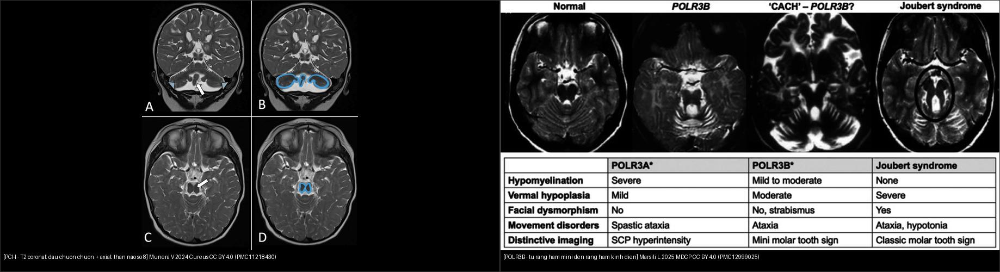
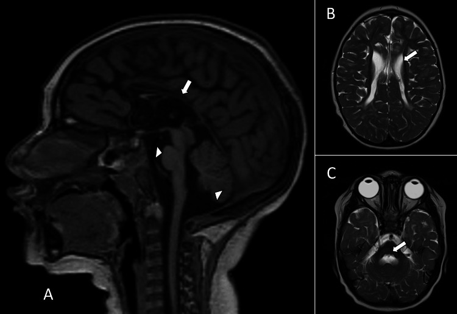
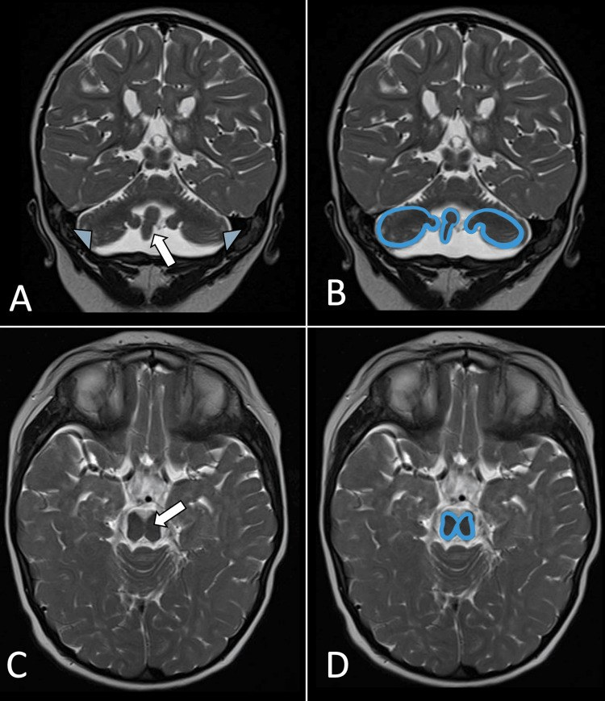
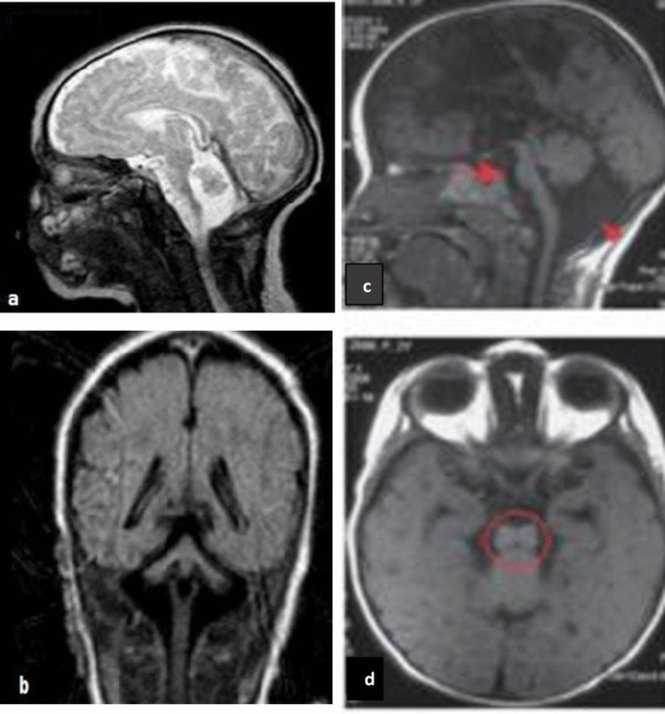
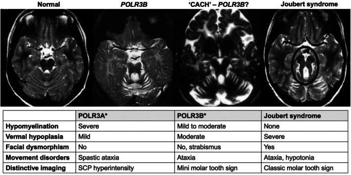
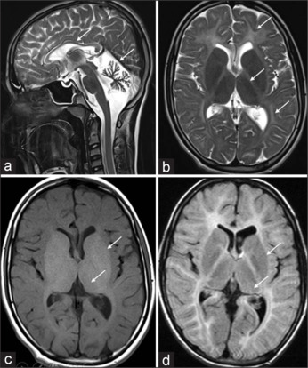
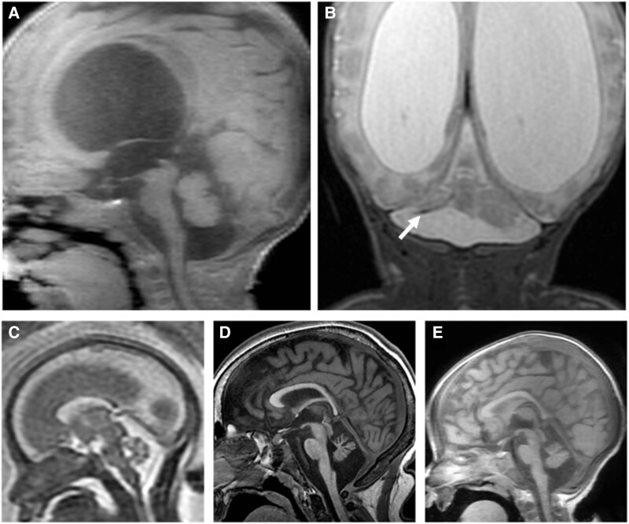

659 — Thiểu sản cầu–tiểu não (PCH/PHSD) & loạn dưỡng chất trắng giảm myelin POLR3B / Pontocerebellar hypoplasia & POLR3B-related hypomyelinating leukodystrophy
Tags: pattern:thieu-san-cau-tieu-nao pattern:giam-myelin pattern:dragonfly pattern:figure-of-8 vung:tieu-nao vung:nao-nhi protocol:MRI-nao-nhi
Mức chắc chắn (certainty): tổng hợp y văn (literature synthesis) — tổng hợp từ bài tổng quan PCH (1912–2022) + cohort quốc gia + ca nguyên văn CC BY; các ca quiz là ca nguyên văn của bài gốc, phần khái quát là tổng hợp.
1. Tổng quan bệnh học – cơ chế hình ảnh
1.1 PCH là gì — "thiểu sản" (hypoplasia), KHÔNG phải "teo" (atrophy)
- Thiểu sản cầu–tiểu não (pontocerebellar hypoplasia — PCH) là một phổ bệnh thoái hóa/thần kinh di truyền với đặc điểm chung: cầu não (pons) và tiểu não (cerebellum) nhỏ hơn bình thường ngay từ khi hình thành, kèm biến đổi thần kinh và hình ảnh rất đa dạng (có thể gồm cả trên lều — supratentorial). Khởi phát trước sinh hoặc sau sinh.
- TẠI SAO gọi là "thiểu sản" chứ không phải "teo": hypoplasia = mô chưa bao giờ đạt kích thước bình thường (ngừng phát triển); atrophy = mô đã phát triển rồi mất đi. Trên chuỗi ảnh theo thời gian, PCH cho thấy ngừng tăng trưởng (arrested growth) hoặc tiến triển chậm — nếu thấy mô co nhỏ dần sau khi đã bình thường thì phải nghĩ nguyên nhân mắc phải (atrophy), không phải PCH.
- Thuật ngữ mới (2025): bài tổng quan 1912–2022 đề xuất gọi cả phổ là pontocerebellar hypoplasia spectrum disorder (PHSD) và dùng cách đặt tên theo gen (dyadic naming) — ví dụ TSEN54-associated PHSD, RARS2-associated PHSD — thay cho cách đánh số cũ (PCH type 1, 2, 3…). Lý do: cách đánh số không phản ánh tính dị thể gen và gây nhầm lẫn tiên lượng.
- Số lượng: y văn hiện có 26 thể/danh mục PCH và 24–25 gen liên quan; hay gặp nhất là TSEN54 (n = 20 nghiên cứu), RARS2 (n = 19), EXOSC3 (n = 15), AMPD2 (n = 9); các type 1, 2, 6 là thường gặp nhất. Trong một cohort quốc gia 64 bệnh nhân (15 trung tâm): CLP1 26,56%, EXOSC3 10,9%, TSEN54 9,3%, AMPD2 9,3%.
1.2 Ba dấu hiệu hình ảnh "chữ ký" và TẠI SAO chúng xuất hiện
- Dấu "chuồn chuồn" (dragonfly sign) — đọc trên mặt cắt vành (coronal) T2: hai bán cầu tiểu não teo làm "cánh chuồn chuồn", sâu tiểu não (vermis) tương đối bảo tồn làm "thân chuồn chuồn". TẠI SAO: các bán cầu tiểu não (nguồn gốc từ mào tiểu não) bị tổn thương nặng hơn sâu → mất cân xứng bán cầu/sâu tạo hình cánh–thân.
- Dấu "số 8" của trung não (figure-of-8 midbrain) — đọc trên mặt cắt trục (axial): trung não có hình số 8 do cuống đại não (cerebral peduncles) ngắn lại/thiểu sản. Gần như luôn gặp trong PCH9 (AMPD2).
- Dấu "răng hàm mini" (mini molar tooth sign) — gặp trong POLR3B. TẠI SAO khác "răng hàm kinh điển": "mini" có cuống tiểu não trên (superior cerebellar peduncle — SCP) MỎNG (chứ không dày) và hố trước (anterior foramen cecum) NÔNG (chứ không sâu) → trông giống nhưng thiếu hai thành phần tạo "chân răng" dày của Joubert.
- Cơ chế giảm myelin trong POLR3B (nhóm 4H): đột biến gen mã hóa tiểu đơn vị RNA polymerase III (POLR3A/POLR3B/POLR1C/POLR3K) → giảm biệt hóa/chức năng tế bào tiền sinh myelin (oligodendrocyte progenitor) → myelin chưa bao giờ được tạo đủ (hypomyelination). Trên MRI: T2 chất trắng tăng tín hiệu nhưng T1 KHÔNG tối (myelin chưa hình thành, không phải myelin bị mất như trong demyelination — nơi T1 thường tối). Đây là điểm vật lý quan trọng để phân biệt hypomyelination vs demyelination.
1.3 Ngưỡng định lượng & mốc đọc
- Không có ngưỡng mm chính thức cho PCH — đánh giá định tính cấu trúc + đo vòng đầu (OFC): vi đầu (microcephaly) định nghĩa là OFC ≤ −2 SD theo tuổi/giới; nhiều thể (đặc biệt CASK) có OFC < −3 SD.
- Đọc chuẩn 3 mặt cắt: sagittal T1 (cầu + tiểu não + thể chai), axial T2 lát mỏng qua ngã ba đồi–cầu (pontomesencephalic junction) (dấu số 8 / răng hàm), coronal T2 (dấu chuồn chuồn).
- PCH9 (AMPD2): dấu số 8 có thể thấy sớm tới tuần 30 thai kỳ trên MRI thai.
- POLR3B: ~90% ca POLR3-related leukodystrophy do POLR3A + POLR3B; POLR3A khởi phát muộn hơn, tiến triển nhanh hơn; POLR3B khởi phát sớm hơn, tiến triển chậm hơn, teo tiểu não rõ hơn và bảo tồn đường vỏ–gai tương đối.
- Lưu ý độ đặc hiệu: dấu chuồn chuồn không nhạy, không đặc hiệu — có thể vắng ở một số ca TSEN54, có mặt ở PCH 1/9/11/16 và ở thiểu sản hố sau mắc phải (đặc biệt tổn thương do sinh non).
2. Mẫu hình + chẩn đoán phân biệt theo dấu hiệu (gamut)
- Mẫu hình gốc: thiểu sản đồng thời cầu não + tiểu não ở trẻ có chậm phát triển/giảm trương lực/co giật. Từ đây hỏi 3 câu: (1) trung não axial có "số 8" không? (2) coronal có "chuồn chuồn" không? (3) chất trắng T2/T1 có "giảm myelin" ± "răng hàm mini" không?
- Gamut theo dấu hiệu:
- Số 8 trung não → AMPD2 (PCH9) (còn có thể kèm thể chai mỏng).
- Chuồn chuồn (coronal) → TSEN54 (PCH2A/2/4/5) là điển hình, nhưng còn PCH1, 9, 11, 16 và thiểu sản hố sau mắc phải (sinh non).
- Hình "bướm" (butterfly) — tiểu não nhỏ nhưng cân đối bình thường (không mất cân xứng bán cầu/sâu).
- Răng hàm mini + giảm myelin → POLR3B (nhóm 4H).
- Răng hàm kinh điển (SCP dày + hố liên cuống sâu) → Joubert (xem bài 657).
- Đồi/cầu + tiểu não thiểu sản có kèm tổn thương trên lều (hạch nền, thể chai) → nghĩ PCH thể có biểu hiện trên lều (ví dụ PCH16, CLP1).
3. Bảng so sánh phân biệt (ma trận đối chiếu)
| Thực thể (entity) | Hình ảnh điển hình | Chốt vào (rule-in) | Chốt loại (rule-out) | Gợi ý xác nhận |
|---|---|---|---|---|
| PCH thể TSEN54 (PCH2A/4/5) | Coronal T2: chuồn chuồn (bán cầu teo, sâu tương đối giữ) + cầu thiểu sản; vi đầu tiến triển, giảm trương lực, loạn vận động | Chuồn chuồn + vi đầu tiến triển + co giật/loạn trương lực | Chuồn chuồn cũng gặp ở PCH9/11/16 và sinh non → không loại trừ nếu thiếu; nếu không có bất kỳ thiểu sản hố sau nào thì loại PCH | Giải trình tự TSEN54 (p.A307S đồng hợp ở PCH2A); MRI chuỗi theo thời gian |
| PCH9 (AMPD2) | Axial: trung não hình số 8 (cuống đại não ngắn) + thể chai mỏng + tiểu não thiểu sản | Số 8 trung não trên axial | Trung não bình thường → loại PCH9 | Giải trình tự AMPD2; có thể thấy số 8 từ tuần 30 thai |
| POLR3B-related HLD (4H) | Giảm myelin lan tỏa (T2 chất trắng sáng, T1 không tối) + teo tiểu não + "răng hàm mini" (SCP mỏng, hố trước nông) | Giảm myelin + răng hàm mini + bộ ba 4H lâm sàng (hypodontia/răng kém + hypogonadotropic hypogonadism) | Không giảm myelin → không phải POLR3-HLD; SCP dày + hố liên cuống sâu → Joubert | Giải trình tự POLR3B; khám răng + nội tiết (LH/FSH, testosterone/estradiol) |
| Joubert (MTS kinh điển) | Axial: SCP dày, nằm ngang + hố liên cuống sâu + thiểu sản sâu não; KHÔNG giảm myelin | Răng hàm kinh điển (SCP dày) + không giảm myelin | SCP mỏng + hố trước nông → "mini" (POLR3B) | MRI ngã ba đồi–cầu lát mỏng; gen lông mao |
| Thiểu sản/teo tiểu não do sinh non (mắc phải) | Tiểu não nhỏ, có thể giống chuồn chuồn; tiền sử sinh non; tổn thương chất trắng quanh não thất | Tiền sử sinh non + tổn thương chất trắng kèm | Không có tiền sử sinh non/tổn thương mắc phải → nghĩ PCH di truyền | Tiền sử + chuỗi ảnh; nếu nghi ngờ → giải trình tự nhóm PCH |
| Thiểu sản tiểu não đơn độc / hình "bướm" | Tiểu não nhỏ cân đối, không mất cân xứng bán cầu/sâu; cầu có thể bình thường | Tiểu não nhỏ cân đối + cầu bình thường | Mất cân xứng bán cầu/sâu + cầu thiểu sản → nghĩ PCH | Đo sinh trắc; tìm nguyên nhân chuyển hóa/di truyền khác |

Trái: PCH — T2 coronal "dấu chuồn chuồn" (bán cầu teo = cánh, sâu giữ = thân) + axial "thân não số 8" (khung xanh). Phải: POLR3B — chuỗi ảnh axial T2 từ trái sang phải: trung não bình thường → POLR3B (răng hàm mini) → CACH (nghi POLR3B) → răng hàm kinh điển của Joubert (khoanh đen), kèm bảng so sánh 4H. Nguồn: Munera V 2024, Cureus (PMC11218430); Marsili L 2025, Mov Disord Clin Pract (PMC12999025) — CC BY 4.0. Ảnh ghép letterbox.Ba dấu hiệu nhìn gì trước?
- Trung não axial: "số 8" (cuống đại não ngắn) → AMPD2/PCH9; "răng hàm" → ngã ba đồi–cầu: dày = Joubert, mỏng = POLR3B (mini).
- Coronal: "chuồn chuồn" (bán cầu teo > sâu) → nhóm PCH (TSEN54 điển hình) hoặc sinh non; "bướm" (cân đối) → thiểu sản tiểu não đơn độc.
- Chất trắng T2 + T1: giảm myelin (T2 sáng, T1 không tối) → nhóm POLR3/4H; nếu T1 tối (mất myelin thật) → nghĩ demyelination (bài 215).
4. Protocol chụp + lưu đồ chẩn đoán
- MRI sọ não (không – có cản quang), tối thiểu: T1 sagittal, T2 axial lát mỏng (≤ 2–3 mm) qua ngã ba đồi–cầu, T2 coronal, FLAIR (chất trắng trên lều), cân nhắc T1 3D để đo thể tích tiểu não/cầu. Nghi thai kỳ: MRI thai HASTE/SSFSE (đọc số 8 có thể từ ~30 tuần).
- Chuỗi ảnh theo thời gian là bắt buộc để phân biệt thiểu sản (ngừng tăng trưởng) với teo (mất mô tiến triển).
- Xét nghiệm kèm: giải trình tự toàn bộ vùng mã hóa (WES/exome) cho nhóm gen PCH/POLR3 (TSEN54, RARS2, EXOSC3, AMPD2, CLP1, POLR3A/B/C/K…) — nhiều ca chỉ chẩn đoán được bằng gen; khám răng (hypodontia), nội tiết (hypogonadotropic hypogonadism), mắt (teo thần kinh thị, loạn dưỡng võng mạc), chuyển hóa (amino acid hữu cơ, acid béo chuỗi rất dài).
- Không có RADS riêng cho nhóm này → dùng lưu đồ quyết định (Kukulka 2025, Milani 2019) + hội chẩn di truyền.
flowchart TD
A[Trẻ chậm phát triển + cầu và tiểu não nhỏ trên MRI] --> B{Axial qua ngã ba đồi-cầu: trung não?}
B -->|So 8 - cuống đại não ngắn| C[AMPD2 - PCH9]
B -->|Răng hàm: SCP dày + hố sâu| D[Joubert - MTS kinh điển]
B -->|Răng hàm: SCP mỏng + hố trước nông| E{POLR3B - kiểm chất trắng}
B -->|Trung não bình thường| F{Coronal: bán cầu vs sâu?}
F -->|Bán cầu teo > sâu - chuồn chuồn| G[PCH nhóm TSEN54 hoặc sinh non]
F -->|Tiểu não nhỏ cân đối - bướm| H[Thiểu sản tiểu não đơn độc]
E -->|T2 chất trắng sáng, T1 không tối| I[POLR3-related HLD - 4H]
E -->|Không giảm myelin| D
G --> J[Giải trình tự nhóm PCH + chuỗi ảnh theo dõi]
I --> K[Khám răng + nội tiết + giải trình tự POLR3B]
5. Biến thể bình thường và cạm bẫy
- Thiểu sản vs teo (cạm bẫy số 1): PCH = chưa bao giờ đủ lớn (hypoplasia); nếu thấy mô co nhỏ dần sau khi từng bình thường → nghĩ atrophy mắc phải, không gọi PCH.
- Chuồn chuồn không đặc hiệu: có thể vắng ở TSEN54 và có ở PCH1/9/11/16 lẫn tổn thương hố sau do sinh non. Đừng chốt thể bệnh chỉ bằng một dấu.
- "Răng hàm mini" ≠ "răng hàm kinh điển": SCP mỏng + hố trước nông = POLR3B; SCP dày + hố liên cuống sâu = Joubert. Đọc nhầm "mini" thành Joubert sẽ bỏ sót bệnh myelin có thể điều trị/tư vấn khác.
- Giảm myelin vs mất myelin (vật lý T1): hypomyelination → T2 sáng, T1 không tối; demyelination → T2 sáng, T1 tối. Cần cả T1 lẫn T2 để phân định.
- Thỏa mãn tìm kiếm (satisfaction of search): thấy tiểu não nhỏ là dừng → bỏ sót biểu hiện trên lều (hạch nền, thể chai, vỏ não), vi đầu, và bất thường mắt–răng–nội tiết. Luôn quét toàn bộ não + khám hệ thống.
- Dấu số 8 ở thai < 30 tuần: cấu trúc chưa hoàn thiện — không kết luận sớm; hẹn khảo sát lại (tương tự nguyên tắc "không kết luận thiểu sản sâu trước 18 tuần" ở bài 657).
6. Tự lượng giá — Blind Quiz
Ca 1 — Trẻ 3 tháng tuổi, sinh non 27 tuần, đầu nhỏ, chậm phát triển. Nhìn ảnh trước, mô tả.

- Gợi ý lâm sàng: nhũ nhi 3 tháng (sinh non 27 tuần), vi đầu, chậm phát triển tâm vận.
- Câu hỏi: (A) sagittal T1 và (B, C) axial T2 cho thấy gì ở hố sau? 3 chẩn đoán phân biệt? Dấu hiệu nào chốt?
Bấm để hiện đáp án
- Dấu hiệu (findings): (A) cầu não + tiểu não nhỏ, thể chai mỏng (mũi tên); (B, C) tăng tín hiệu chất trắng quanh não thất/trên lều (mũi tên).
- Chẩn đoán (diagnosis): thiểu sản cầu–tiểu não (PCH) trên bối cảnh sinh non (thể do tổn thương hố sau mắc phải do sinh non là DDx quan trọng) — vì hypoplasia cầu + tiểu não kèm tổn thương chất trắng. → đối chiếu chuỗi ảnh (thiểu sản = ngừng tăng trưởng) + giải trình tự nhóm PCH nếu tiến triển.
- Nguồn ảnh: Munera V et al., Cureus 2024 (PMC11218430), CC BY 4.0 — Fig 1.
Ca 2 — Trẻ có "dấu chuồn chuồn". Nhìn ảnh trước, chỉ ra dấu hiệu.

- Câu hỏi: (A, B) coronal T2 — "cánh" và "thân" chuồn chuồn là gì? (C, D) axial T2 — hình dạng trung não gợi ý gì?
Bấm để hiện đáp án
- Dấu hiệu (findings): (A) coronal T2 — bán cầu tiểu não teo (mũi tên xanh = cánh) + sâu tiểu não tương đối bảo tồn (mũi tên trắng = thân) = dấu chuồn chuồn; (B) sơ đồ khoanh xanh; (C, D) axial — trung não hình số 8 do cuống đại não ngắn (khung xanh).
- Chẩn đoán (diagnosis): PCH với phối cảnh chuồn chuồn + số 8; gợi ý phổ gen TSEN54/AMPD2. → giải trình tự nhóm PCH, theo dõi vòng đầu.
- Nguồn ảnh: Munera V et al., Cureus 2024 (PMC11218430), CC BY 4.0 — Fig 2.
Ca 3 — Trẻ có chậm phát triển + bất thường hố sau. Nhìn ảnh trước.

- Câu hỏi: Hai bệnh nhân trong hình có cùng kiểu bất thường tiểu não/trung não không? Kể tên dấu hiệu và gen gợi ý.
Bấm để hiện đáp án
- Dấu hiệu (findings): (a, b) dấu "chuồn chuồn" (sâu giữ tương đối, bán cầu teo) ở một bệnh nhân TSEN54; (c, d) thân não hình "số 8" ở một bệnh nhân AMPD2 (PCH9).
- Chẩn đoán (diagnosis): PCH — chuồn chuồn (TSEN54) và số 8 (AMPD2) là hai dấu hiệu khác nhau của cùng phổ PCH. → giải trình tự gen tương ứng.
- Nguồn ảnh: Cavusoglu D et al., Cerebellum 2024 (PMC11489189), CC BY 4.0 — Fig 3.
Ca 4 — Trẻ có ataxia + răng kém + dậy thì muộn. Nhìn ảnh trước, mô tả trung não.

- Gợi ý lâm sàng: hai chị em ataxia tiến triển, hypogonadism, răng thứ phát kém, chậm phát triển.
- Câu hỏi: Chuỗi axial T2 (trái→phải) cho thấy gì ở trung não? "Răng hàm mini" khác "răng hàm kinh điển" ở điểm nào?
Bấm để hiện đáp án
- Dấu hiệu (findings): từ trái sang phải: trung não bình thường → POLR3B (răng hàm mini) → CACH (nghi POLR3B) → răng hàm kinh điển của Joubert (khoanh đen). Bảng kèm theo: POLR3B có giảm myelin nhẹ–trung bình, thiểu sản sâu vừa, "mini molar tooth sign"; Joubert không giảm myelin, thiểu sản sâu nặng, "classic molar tooth sign".
- Chẩn đoán (diagnosis): POLR3B-related hypomyelinating leukodystrophy (nhóm 4H) — vì SCP mỏng + hố trước nông tạo "răng hàm mini", kèm giảm myelin (khác Joubert SCP dày + hố sâu). → giải trình tự POLR3B, khám răng + nội tiết.
- Nguồn ảnh: Marsili L et al., Mov Disord Clin Pract 2025 (PMC12999025), CC BY 4.0 — Fig 1.
Ca 5 — Bệnh nhân có ataxia tiểu não, thể chai mỏng, chất trắng tăng tín hiệu. Nhìn ảnh trước.

- Gợi ý lâm sàng: nam 22 tuổi, ataxia từ 2 tuổi, răng cửa hàm trên kém phát triển, không có đặc điểm sinh dục thứ phát.
- Câu hỏi: (a) T2 sagittal thấy gì ở tiểu não và thể chai? (b, d) T2/FLAIR thấy gì ở chất trắng? Gợi ý bệnh gì?
Bấm để hiện đáp án
- Dấu hiệu (findings): (a) teo tiểu não lan tỏa + thể chai mỏng (mũi tên); (b, d) T2/FLAIR tăng tín hiệu đối xứng hai bên bao trong sau, quanh não thất và dưới vỏ; giảm tín hiệu đồi thị/hạch đậu nhạt.
- Chẩn đoán (diagnosis): POLR3-related leukodystrophy (4H: Hypomyelination, Hypodontia, Hypogonadotropic hypogonadism) — vì giảm myelin + teo tiểu não + thể chai mỏng trên bối cảnh răng kém và dậy thì muộn. → giải trình tự POLR3B.
- Nguồn ảnh: Sachithanandan S et al., Ann Indian Acad Neurol 2026 (PMC12962435), CC BY-NC-ND 4.0 — Fig 2 (giữ nguyên bản, không ghép).
Ca 6 — Hình ảnh thần kinh trong một bài tổng quan PCH. Nhìn ảnh trước.

Bấm để hiện đáp án
- Dấu hiệu (findings): (A) T1W sagittal và (B) T2W coronal ở nhũ nhi 3 tháng (sinh non 27 tuần) cho thấy dấu "chuồn chuồn" của thiểu sản tiểu não (bán cầu teo > sâu); các ô còn lại (C–E) minh họa thêm tổn thương hố sau/não trong nhóm PCH.
- Chẩn đoán (diagnosis): PCH (PHSD) — bài tổng quan 1912–2022 dùng hình này làm ví dụ "dấu chuồn chuồn", lưu ý dấu này cũng gặp ở tổn thương mắc phải do sinh non nên không đặc hiệu.
- Nguồn ảnh: Kukulka NA et al., Brain Commun 2025 (PMC12422213), CC BY 4.0 — Fig 3 (chú thích theo bài gốc).
Bài liên quan chéo
- 600 – Tổng quan Nhi khoa
- 650 – Thần kinh nhi (xuất huyết mầm, u hố sau)
- 654 – Tổn thương não sơ sinh KHÔNG do ngạt
- 655 – HIE sơ sinh & dị tật bẩm sinh hệ thần kinh
- 657 – Dị tật hố sau: Joubert & rhombencephalosynapsis (dấu răng hàm kinh điển)
- 656 – Bất thường tủy–cột sống kín ở trẻ
- 215 – Mất myelin (McDonald) (demyelination vs hypomyelination)
- 218 – Thoát vị não & úng thủy
Ảnh
- Ảnh tải về + giấy phép từng file:
images/CREDITS.md. Phần lớn CC BY 4.0 (cho phép ghép/điều chỉnh, ghi nguồn); 1 ảnh CC BY-NC-ND 4.0 giữ nguyên bản, không ghép. - Ảnh ghép đối chiếu tạo bằng
tools/make_composite.py(letterbox nền đen, giữ aspect).
Không dùng để chẩn đoán độc lập khi chưa có người hướng dẫn.